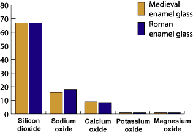

Medieval window glass could not have been used to make the enamels. However, if we compare a Roman blue enamel with a medieval one we find that they are very close: The Roman glasses are also made opaque by particles rich in antimony, just like the medieval enamels. It looks as if Roman glass was used to make twelfth century medieval enamels.

Chart Summary- Chemical composition:
Silicon dioxide in Enamel glass = 67%
Silicon dioxide in Window glass = 67%
Sodium oxide in Enamel glass = 16%
Sodium oxide in Window glass = 15%
Calcium oxide in Enamel glass = 6%
calcium oxide in Window glass = 7%
Potassium oxide in Enamel glass = 0.5%
Potassium oxide in Window glass = 0.5%
Magnesium oxide in Enamel glass = 0.5%
Magnesium oxide in Window glass = 0.5%